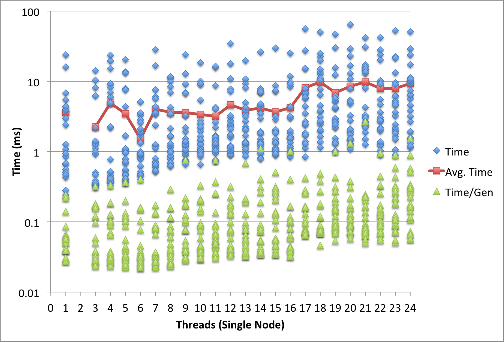
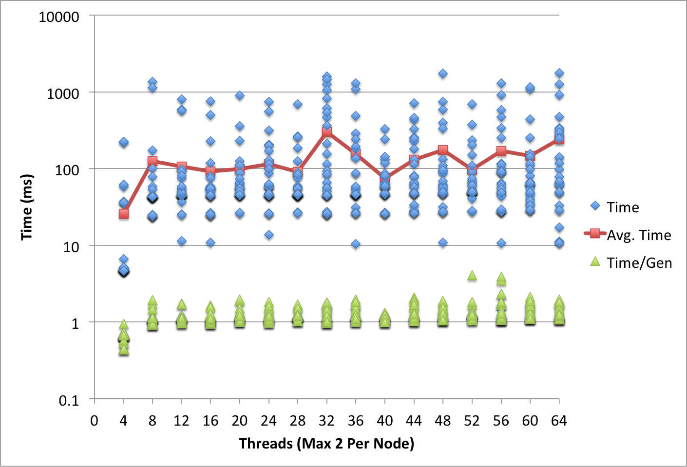
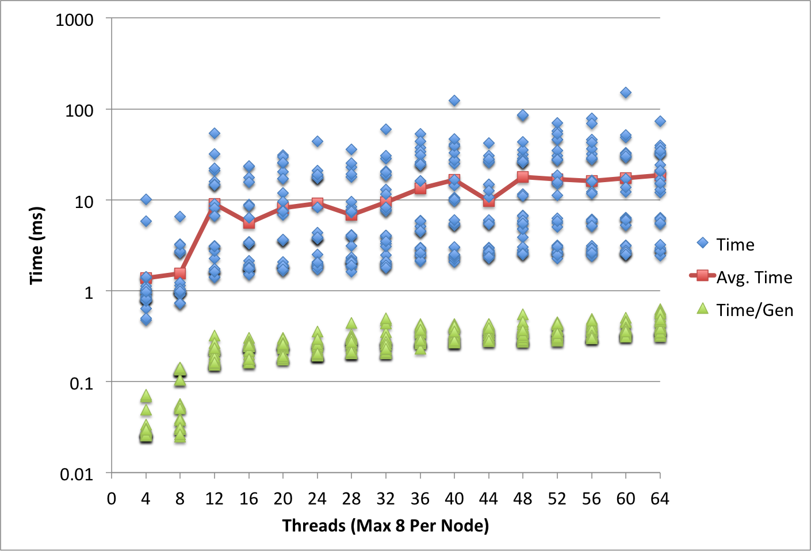

Your browser doesn't support the features required by impress.js, so you are presented with a simplified version of this presentation.
For the best experience please use the latest Chrome, Safari or Firefox browser.
Parallelizing the NEAT Method using UPC
Russell Feldhausen
What is NEAT?
- NeuroEvolution of Augmenting Topologies
- Based on Evolutionary Computing and Neural Networks
- Developed by Stanley and Miikkulainen at the University of Texas
- Known to gamers through MarI/O by SethBling on YouTube
Features of NEAT
- Neural Network of input nodes, output nodes, and hidden nodes
- Connecting links have real number weights assigned to each
- Similar networks are grouped into "species" to protect novel features
- Networks can crossbreed to share features
My Approach
- Use UPC and the PGAS model to parallelize NEAT
- A global population of networks shared across threads
- Each thread evolves and evaluates new networks locally, then shares them globally
- Continue until solved or stagnation
Algorithm - Phase 1
- Cull bottom 50% of each species
- Randomly breed/crossbreed within species to fill population
- Evaluate and retain single best network in each species
Algorithm - Phase 2
- Breed species representatives to repopulate
- Evaluate new children and place into species, creating new species as needed
Optimizations
- No dynamic memory allocation
- Networks are bred and evaluated on local thread memory, then copied to shared memory
- Two shared memory buffers (read-only and write-only) to prevent race conditions and eliminate locks
- Single lock for few shared variables
Testing
- Two input binary XOR function
- Requires a hidden node to solve
- Used by Stanley and Miikkulainen as a baseline test
- Single-node scaling
- Multi-node scaling
- Max 8 threads/node
- Max 2 threads/node
2 Input - Single Node

2 Input - 32 Nodes

2 Input - 8 Nodes

Second Testing
- First test results == No scaling
(but not bad overhead either)
- Ran two more tests:
- Each thread has large local population, no shared memory; stop when any thread finds a solution
- Repeat that attempt with larger 3 input binary XOR problem
Outcome
- UPC makes PGAS very simple
- NEAT can be parallelized, but no scaling present by default
- Distributed, independent NEAT threads do show scaling across many nodes
- More evaluation with larger problems may reveal different results